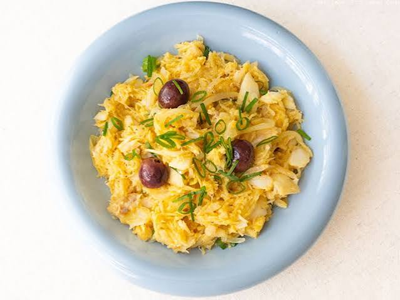
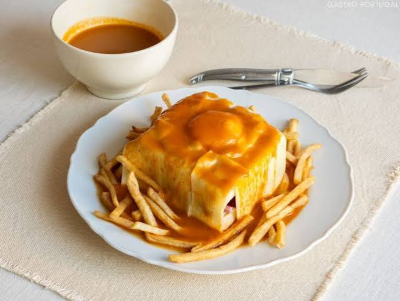
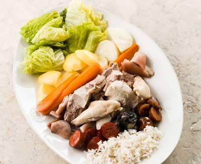
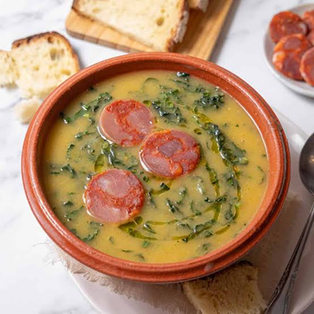
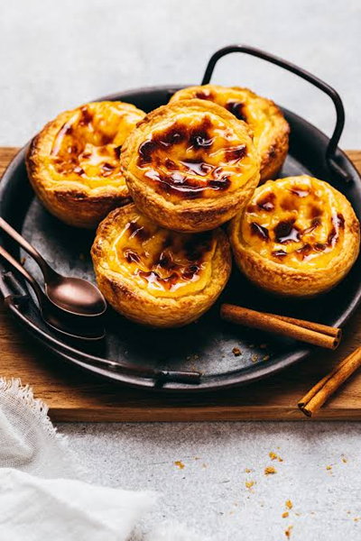
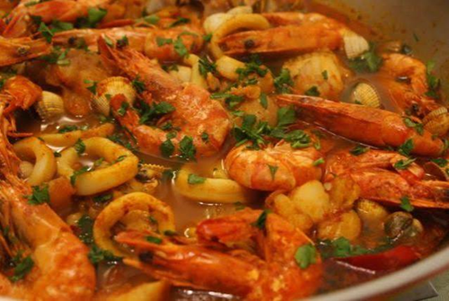

Início | Receitas e sobremesas
A culinária portuguesa nasceu da relação entre o Atlântico, o campo e séculos de viagens. O azeite, o alho e o peixe fresco são a base de pratos simples, generosos e cheios de memória.
Em cada região, as receitas mudam: o litoral prefere o peixe e o marisco, o interior aposta nas carnes, nos enchidos e nos cozidos.




| Região | Prato típico | Ingrediente principal |
|---|---|---|
| Norte | Francesinha | Carnes e molho |
| Centro | Leitão da Bairrada | Leitão |
| Lisboa | Pastel de nata | Ovos e natas |
| Alentejo | Açorda alentejana | Pão e coentros |
| Algarve | Cataplana de marisco | Marisco |


Descubra mais sobre a gastronomia do país no site oficial Visit Portugal.